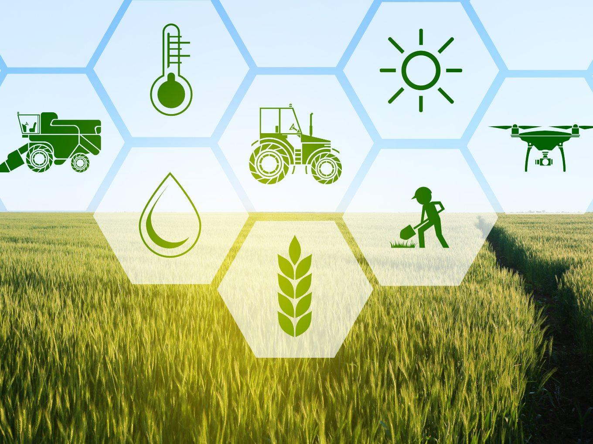

Agricultural management is an essential aspect of modern farming. It combines knowledge of biology, business, economics, and environmental science to optimize the use of resources, improve yields, and ensure sustainability in agricultural practices.
Farmers use different management techniques, including crop planning, livestock care, financial forecasting, and the use of technology, to increase efficiency and sustainability. As agriculture becomes more complex with the advent of new technology, effective management is more important than ever.
